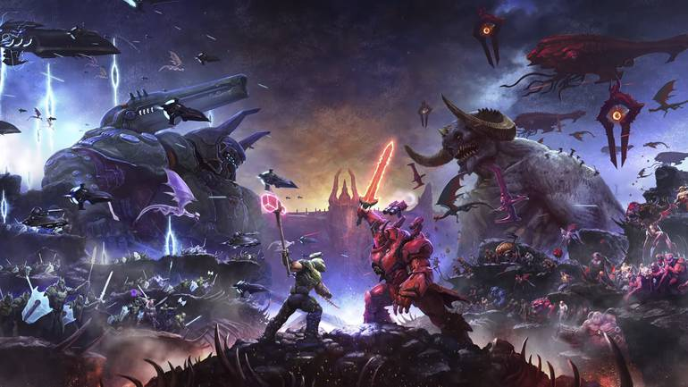
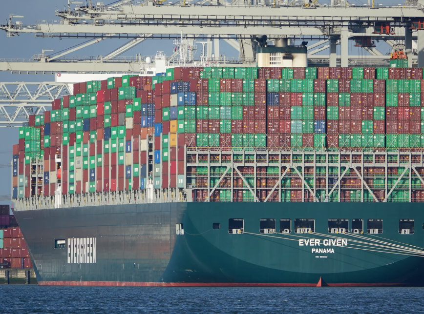

Doom Eternal: The Ancient Gods traz desafio elevado ao ponto do masoquismo
25/03/2021 - arthur.eloi@theenemy.com.br

Mesmo com excelente recepção crítica, é possível entender o que torna DOOM Eternal tão divisivo entre os fãs. O game de 2020 é uma revolução para os FPS, trazendo densidade às mecânicas centrais de tiro e movimentação do gênero, mas o nível de disciplina e inventividade que cobra dos jogadores pode ser exigente demais para muita gente.
Link original
Trabalhos para desbloqueio do Canal de Suez seguem durante fim de semana
27/03/2021 - fernando.rodrigues@poder360.com.br

O tráfego no Canal de Suez, uma das rotas de navegação mais importantes do mundo, está paralisado desde 3ª feira (23.mar.2021), quando um navio de contêineres encalhou, bloqueando a passagem. Autoridades do Egito dizem que trabalham para liberar a passagem neste fim de semana, mas o Suez pode ficar fechado por semanas se a operação falhar.
Link original